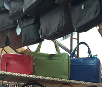
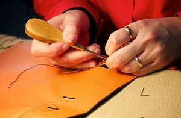

San Lorenzo Area: Sample Itinerary, Mon-Sat
- Medici Chapels
- San Lorenzo & Laurentian Library
- Lunch Nearby Restaurants
- Explore markets
- Snack Nearby cafes and ice cream
- Palazzo Medici
Detailed Site Information
| Site | Hours | Cost | Reservation | Notes |
|---|---|---|---|---|
| Medici Chapels | Everyday 8:15-5 summer, 8:15-2 winter | €8 | No | Dress appropriate to religious site. |
| Basilica San Lorenzo and Laurentian Library | M-Sa 10-5, Su 1:30-5:30, closed Su Nov-Feb | €7,50* | No | Dress appropriate to religious site. *combined Basilica & Library; Basilica alone €5 |
| Central Market (inside) | Everyday 8am-midnight | Free | No | |
| San Lorenzo Market (outside) | Tu-Sa | Free | No | |
| Palazzo Medici | Everyday 9-6 | €7 | No |
Nearby Restaurants
- Nobile Bistro, $, Piazza di Madonna Degli Aldobrandini 13/R
- da Nerbone, $, Central Market (inside)
- Osteria Pepo, $$-$$$, Via Rosina, 4/6R
- Trattoria al Vecchio Mercato, $$-$$$, Piazza del Mercato 12-13
- MCF Mercato Centrale Firenze, $$-$$$, Central Market (inside)
Nearby Cafes and Ice Cream
- Antica Gelateria Fiorentina, Via Faenza n. 2A
- ITIT Il Sandwich Cafe, Via Camillo Cavour 45R
- Leonardo Gelateria-Caffe, Via XXVII Aprile 45/R
- Antica Pasticceria Sieni, Via Sant'Antonino 54 R
- La Creperie, Via Panzani, 44/r
Florentine Leather
Florentines have been tanning hides for leather production since the 12th century. To this day, the artisan tradition and luxurious quality of Florentine leather make the city famous for leather goods. Visitors can find purses, shoes, bags, and accessories at the market in San Lorenzo or at boutiques on Via Tornabuoni.
